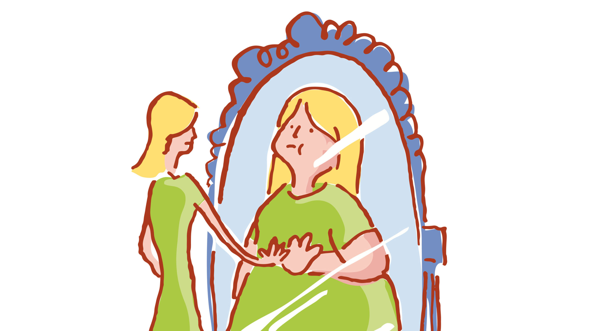

Body image problems can also lead to mental health problems, particularly if the body image issues have led to disordered eating. There is a link between eating disorders and depression and anxiety. That anxiety or depression can develop at the same time as the eating disorder, or before it or after it. Engler says there are some connections between depression and bulimia nervosa, as well as between anxiety and anorexia. A negative body image can impact your overall quality of life. A study found that people who reported having a positive body image (measured by a body image scale that evaluated individuals’ satisfaction with various body functions and parts of the body) was closely related to quality of life for study participants, all of whom were from Turkey and age 15 or older.
